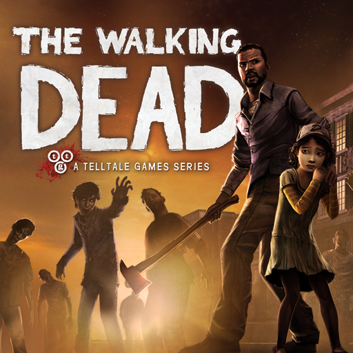

En esta seccion, vas a encontrar una serie de juegos, los cuales he jugado, junto a una breve Descripcion, para recomendarte.
Juegos que recomiendo
Juegos de mundo abierto
Un videojuego de mundo abierto es aquel que ofrece al jugador la posibilidad de moverse libremente por un mundo virtual y alterar cualquier elemento a su voluntad.
Grand theft auto IV

Grand Theft Auto IV es un videojuego de acción-aventura de mundo abierto desarrollado por Rockstar North.es el noveno título de la serie Grand Theft Auto. El protagonista de esta historia es Niko Bellic, un excombatiente, de Europa del este, que emigró a Estados Unidos en busca del sueño americano prometido por su primo, pero que rápidamente es arrastrado a un submundo criminal.
The Legend of Zelda: Breath of the Wild

Es un videojuego de acción-aventura de 2017 de la serie The Legend of Zelda, desarrollado por Nientendo. El jugador controla a Link, que despierta en un mundo postapocalíptico después de estar cien años durmiendo para derrotar a Ganon y salvar al reino de Hyrule. A diferencia de los anteriores, este videojuego es exclusivo de las consolas de nintendo, como la switch.
Batman: Arkham Knight

Es un videojuego de acción-aventura y mundo abierto desarrollado por Rocksteady Studios y lanzado por Warner Bros. El juego muestra como, sin la presencia caótica del Guasón, los ciudadanos de Gotham nunca se han sentido más seguros, y el crimen en la ciudad ha disminuido dramáticamente. Sin embargo, esto le ha dado a los enemigos de Batman, incluyendo a el Pingüino, Dos Caras y Harley Quinn, la oportunidad de unirse con el único objetivo de matar al Caballero Oscuro. En la noche de Halloween, el Espantapájaros amenaza la ciudad con su recién creada variedad de la toxina del miedo, y bombas plantadas en toda Gotham, obligando a evacuar a los seis millones de civiles de la ciudad. Sólo los criminales permanecen en la ciudad, dejando al Comisionado Gordon y la Policía de Gotham City abrumados. Anticipándose a una nueva amenaza, Batman continúa desarrollando tecnología para combatir el crimen, y mantiene una vigilia sobre la ciudad.
Juegos de aventura grafica
Es un subgenero de los videojuegos de aventura que consisten en ir avanzando por el mismo a través de la resolución de diversos rompecabezas que propone la trama del juego, y de la interacción con NPCs y objetos por medio de un menú, utilizando un cursor para moverse y/o realizar alguna acción en concreto.
The Walking Dead: Season one

Es un videojuego basado en los comics del mismo nombre. Desarrollado por Telltale Games. La historia principal se centra en Lee, un profesor de historia que iba camino a la carcel, y Clementine, una niña pequeña que Lee rescato al inicio del apocalipsis. Ellos junto a una serie de personajes, intentan sobrevivir en un mundo lleno de zombies.
The Walking Dead: Season two
Es la segunda entrega del videojuego desarrollado por Telltale Games. Pero a diferencia con el anterior videojuego, se centra en Clementine, justo despues de terminar el anterior juego. En esta entrega, Clementine tratara de sobrevivir a las terribles adversidades de este mundo, junto a la ayuda de nuevos conocido y algun que otro viejo amigo.
Detroit: Become Human

Se trata de un androide con forma humana fabricada con una nueva conciencia artificial, lo que la hace escapar de las instalaciones donde fue creada, para intentar vivir entre los humanos como una más y encontrar su lugar en un mundo donde los robots son utilizados como meros sirvientes de la sociedad.